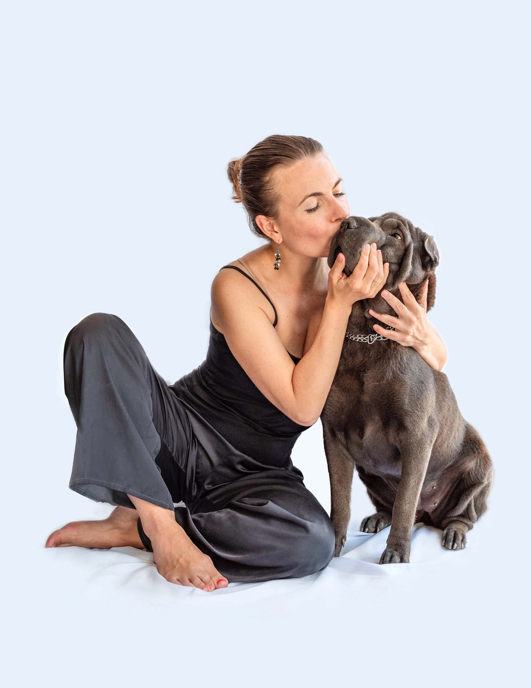

Катя, тебе сегодня 39, и в эти годы ты сделала больше, чем многие за жизнь. Ты создаёшь уют не только для себя, но и для хвостатых душ, которым ты подарила счастье. 💖
Ты умеешь слышать сердцем, лечить добротой и вдохновлять своим примером. Твой приют — не просто дом для животных, это — оазис заботы, тепла и настоящей любви. Мы восхищаемся твоей силой, преданностью делу и тем, как ты превращаешь каждое утро в праздник для тех, кто мяукает и лает рядом с тобой.
Пусть впереди будет много счастья, крепкого здоровья, надёжных людей рядом, и чтобы каждый день дарил тебе столько же добра, сколько ты отдаёшь этому миру. ❤️
С любовью и бесконечным уважением,
Твои друзья и хвостатая команда 🐾
